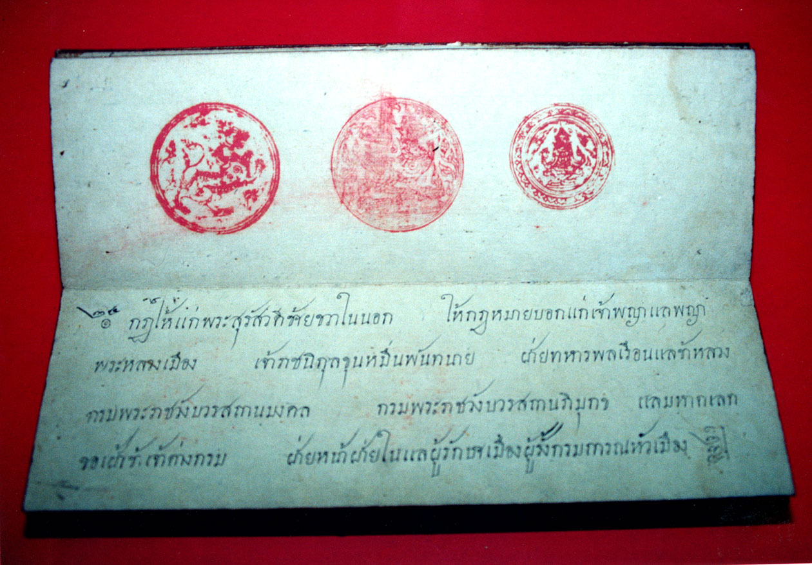
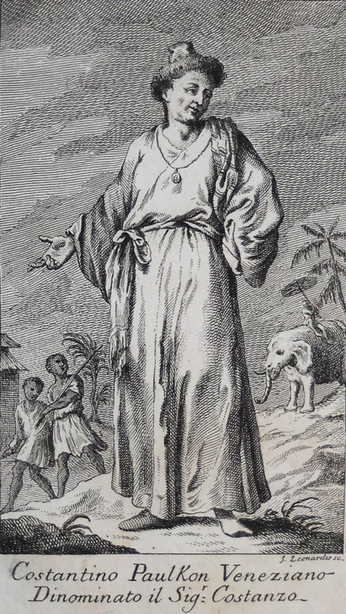

CLASS: PRE-CODE (ก่อนยุคประมวลกฎหมาย) | ยุคอยุธยา — ต้นกรุงรัตนโกสินทร์
CASE DOSSIER: PRE-CODE ANTIQUITIES
คดีเด่นจากยุคก่อนมีประมวลกฎหมายลายลักษณ์อักษร — ตั้งแต่สมัยกรุงศรีอยุธยาจนถึงต้นกรุงรัตนโกสินทร์ ก่อนการปฏิรูปกฎหมายครั้งใหญ่ในรัชกาลที่ 5

EXHIBIT A // ARCHIVAL
คดีขุนวรวงศาธิราช
ผู้เฝ้าหอพระที่ก้าวขึ้นครองราชบัลลังก์ร่วมกับแม่หยัวศรีสุดาจันทร์ หลังปลงพระชนม์สมเด็จพระยอดฟ้า ก่อนถูกขุนนางลอบปลงพระชนม์เองที่คลองสระบัวหลังครองราชย์ได้เพียงราว 42 วัน

คดีประหารเจ้าพระยาวิชเยนทร์ (คอนสแตนติน ฟอลคอน)
ชาวกรีกผู้ก้าวขึ้นเป็นขุนนางชั้นสูงสุดในสมัยสมเด็จพระนารายณ์มหาราช ถูกจำคุกข้อหาขบถและประหารชีวิตหลังพระเพทราชาทำรัฐประหารขณะพระเจ้าอยู่หัวประชวรหนัก — ภาพแกะสลักร่วมสมัยจาก Wikimedia Commons (public domain)
คดีอำแดงป้อม: จุดกำเนิดกฎหมายตราสามดวง
คดีฟ้องหย่าของหญิงชาวบ้านที่ศาลตัดสินให้หย่าได้ตามกฎหมายเดิมที่ล้าสมัย นำไปสู่ความกริ้วของรัชกาลที่ 1 และการโปรดเกล้าฯ ให้ชำระกฎหมายครั้งใหญ่ จนเกิดเป็น "กฎหมายตราสามดวง" — รากฐานกฎหมายไทยก่อนยุคประมวล
คดีกบฏเจ้าฟ้าเหม็น (กรมขุนกษัตรานุชิต)
คดีกบฏครั้งใหญ่ในช่วงต้นรัชสมัยพระบาทสมเด็จพระพุทธเลิศหล้านภาลัย เมื่อพระราชโอรสในสมเด็จพระเจ้าตากสินมหาราชถูกกล่าวหาว่าซ่องสุมกำลังคิดขบถ นำไปสู่การจับกุมและสำเร็จโทษตามโบราณราชประเพณี
คดีสมเด็จพระนางเรือล่ม
โศกนาฏกรรมเมื่อเรือพระที่นั่งล่มในแม่น้ำเจ้าพระยา แต่ผู้เห็นเหตุการณ์ไม่กล้าเข้าช่วยเหลือเพราะเกรงกลัวกฎมณเฑียรบาลโบราณที่ห้ามแตะต้องพระวรกาย นำไปสู่การปฏิรูปกฎหมายในเวลาต่อมา
คดี ก.ส.ร. กุหลาบ
ปัญญาชนสามัญชนที่ท้าทายการผูกขาดความรู้ทางประวัติศาสตร์ของชนชั้นสูง ถูกกล่าวหาว่าบิดเบือนข้อเท็จจริง ("กุ") และถูกลงโทษด้วยการส่งไปขังในโรงวิปัสสนา — คดีก่อนยุคกฎหมายลักษณะอาญา ร.ศ.127
คดีเหล่านี้เป็นบันทึกจากคลังข่าวเดิมของ Cool Uncle Legal Lab ยังไม่ผ่านการยืนยันแหล่งอ้างอิงระดับเดียวกับแฟ้มคดีในระบบ Golden Cases — ใช้เพื่อการศึกษาเชิงประวัติศาสตร์กฎหมายเบื้องต้น